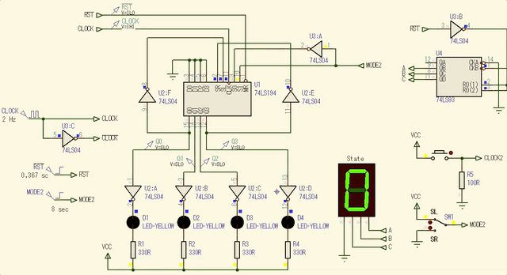

Aula de 16.10.2019
O caso aqui é realizar um contador Jonhson de 8 estágios, ou 8 estados, baseado no CI Registrador de Deslocamento Universal de Bidirecional, 74LS194.
Para tanto, deve haver uma entrada externa chamada MODE cujo nível lógico controla o sentido da sequencia de acionamento das saídas do contador Jonhson:
Observando a tabela funcional do 74LS194, notamos que:
Para lograr o sentido de deslocamento desejado se faz necessário, realizar a seguintes conexões da entrada externa MODE às entradas S1 e S0 que controlam seu sentido de deslocamento. Então:
Notamos que os níveis lógicos necessários entre as entradas S1 e S0 são complementares entre si, ou seja, uma porta inversora colocada entre estas 2 entradas resolve o problema. E se percebe pelos itens anteriores que facilita conectar: \(MODE \rightarrow S1\) e \(S0 \leftarrow \overline{MODE}\).
Além disto, para o CI 74LS194 se comportar como contador Jonhson falta realizar as realimentações externas:
O circuito final fica então:

No circuito da figura anterior, o pequeno bloco baseado no contador 7493 está ai apenas como um circuito de apoio, de forma a tentar mostrar no display de 7-segmentos o estado atual de um todal de 8 estados, já que contador 74LS93 está configurado como MOD-8.
As formas de onda demonstrando o correto funcionamento deste circuito é mostrado na figura à seguir:

Note que inicialmente é realizado um RESET nos FF's do 74LS194 usando o sinal \(\overline{RST}\) que inicia em nível lógico baixo e permanece no mesmo os primeiros 367 milisegundos, findo os quais, este sinal permanece em nível lógico alto. Este pulso inicial em nível lógico BAIXO garante o Reset de todos os FF's internos do 74LS194.
Depois do pulso inicial de Reset o circuito continua operando em M=0, ou Deslocamento para Direita (Shift Right) pelos primeiros 6 segundos. Passados estes 6 segundos, esta entrada muda para nível lógico ALTO, forçando o 74LS194 a realizar então Desclocamento para Esquerda (Shift Left).
Perceba pelas formas de onda, que as saídas dos FF's se mantêm no mesmo nível lógico durante 4 pulsos de Clock, caracterizando o comportamento esperado para este registrador Johson: 8 estados diferentes, ou seja, qualquer saída (enquanto a entrada MODE não têm seu nível lógico alterado) permanece em nível lógico ALTO por 4 pulsos de clock e depois permanece mais 4 pulsos de clock em nível lógico BAIXO, findo os quais, o ciclo de comuntação das saídas do 74LS194 recomeça sua sequencia (ou recicla).
Ou mais especificamento, a simulação abaixo mostra apenas deslocamento para direita (Shift Right) -- entrada MODE=0 todo o tempo:

Outra simulação mostrando como o circuito se comporta realizando apenas deslocamento para esquerda (Shitf Left) é mostrado à seguir:

A idéia é realizar um contador Jonhson de 6 estágios bi-direcional usando o CI Registrador de Deslocamento Universal 74LS194.
Para tanto, serão necessários 3 FF's. Então usamos apenas 3 FF's dos 4 presentes do 74LS194. Apresenta-se 2 opções:
Devemos nos atentar para as realimentações necessárias para transformar o 74LS194 num contador Johson.
Usaremos as saídas Q0, Q1 e Q2. Para tanto, inicialmente vamos implementar as realimentações da seguinte forma:
Se realizarmos a conexão (incorreta, pelo que já foi previsto no 2o-item anterior(2)), uma primeira versão deste circuito fica:

Notamos que enquanto o usuário realizar deslocamento para a direita (SR), não vamos perceber nenhum problema no circuito:

Entretanto, se o circuito for iniciado com deslocamento para esquerda (SL) -- ver figura abaixo, o problema se torna perceptível.

Este erro se verifica mesmo que o circuito inicie com deslocamento à direita e depois seja comutado para deslocamento à esquerda, o que ocorre depois do instante de tempo t = 6 segundos que é quando mudamos a entrada externa MODE para Shift Letf, conforme mostra a simulação abaixo:
-- Como podemos corrigir o problema?
Se montarmos uma tabela representando a sequencia de saída formada no 74LS194 percebemos que no caso do deslocamento para esquerda, ele "demora" um pulso de clock para ocorrer, porque o bit (da realimentação) não ingressa no FF-2 e sim no FF-3. Assim, ocorre 1 "atraso de" 1 pulso de clock para a sequencia de deslocamento à esquerda ser verificada.

E note que este contador, para shift left assume 8 estágios e não 6 como desejado. Lembrar que externamente só acessamos as saídas Q0, Q1 e Q2.
Uma solução: "adiantar" a realimentação: ao invés da entrada SL ser alimentada pela saída Q0, vamos conectar SL à saída (complementada) de Q1. A idéia é "adiantar" o sinal usado para reciclagem.
Neste caso, o circuito fica:
E a sequencia de contagem fica:
Nesta versão, funcional 100% definimos as realimentações como:
E ainda realizamos "PL" (Parallel Load) no estado: Q0Q1Q2Q3 = 0001(2), para evitar um "atraso" na inicialização do circuito se o mesmo iniciar com MODE=1 (Shift Left).
Resta apenas "aprimorar" a lógica originalmente prevista para o "Reset", já que agora, não realizamos Reset e sim PL.
Obervando a tabela verade do 74LS194, percebemos que:

Num instante de tempo inicial, para realizar "PL" necessitamos S1=1 e S0=1 e depois deste instante inicial, S1 e S0 sempre assumem níveis lógicos diferentes entre si, dependendo da variável externa M.
Usando álgebra de Boole para resolver a lógica necessária para as entradas S1 e S0 temos:
Lembrando que quando \(M=1\) deve ser realizado SR (Shift Right) e quando \(M=0\) deve ser realizado SL (Shift Left).
Uma porta OR associada para a entrada S1 e outra porta OR associada com a entrada S0 resolve o problema, além de ser necessário contar um sinal de Reset (RST) em nível lógico alto (ou ativo alto).
O circuito final fica então:
Quando o circuito inicia com MODE=0 (Shift Right), podemos observar a seguinte simulação:

E as seguintes formas de onda podem ser observadas:

Quando o circuito inicia com MODE=1 (Shift Left), podemos observar a simulação abaixo:

E estas outras formas de onda podem ser observadas:

Este circuito pode ter sua entrada MODE modificada a partir de t = 6 segundos, conforme mostra a simulação abaixo:

Com as seguintes formas de onda:

E trabalhando comandado pelo usuário pode resultar em:

Obs.: Na prática, os pulsos de Clock não podem ser simulados com um simples circuito baseado um chave de pressão. Seria necessário acrescentar um circuito de debouncing baseado em monoastável, ou acrescentar um circuito RC + Scmiddt-trigger para filtrar os ruídos de chaveamente de uma chave real.
(c) Fernando Passold, em 19.10.2019